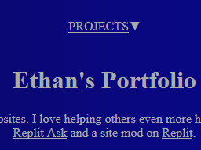
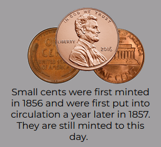

My portfolio (this website)

Its this website. Not sure how else to describe it...
The site houses my portilio how to contact me, some projects and of the likes of it.
Coin Catalog

Coin Catalog is an open sourse project I contribute and is the sole maintainer of. It has info about coins from all through out American history and is constantly growing.